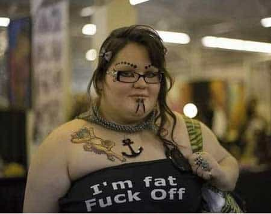

< < < Back
6 Reasons Why Fat Women Are Defective – Return Of Kings
Being a reader of Return of Kings, I’m going to assume you’re at least somewhat as aware as I am of the current trend of the ugly delusion that is “fat acceptance” and the common and increasing problem of obesity in Western countries. Fat Shaming Week was like a gasp of fresh air after having run across the barrage of pro-fat and fat, ugly feminist rants on the internet.
Here in the United States, my eyes have to suffer torture on a daily basis by seeing fatties everywhere I go. And especially here in the southeast United States, where fried foods and shitty clothing reign supreme. It’s depressing to see some of the moderately attractive or even outright cute women I went to high school with who have let themselves go and consequently have swollen and lost a large portion of what made them desirable women. They are distorted renditions of their former selves. And it seems the trend towards fat being the new normal is growing, when in fact it is a celebration of broken women. Here’s why fat women are defective:
1. They are full of rationalization and denial
Obesity is an undesirable trait; this is an undeniable fact. One characteristic of “big girls” I have noticed somewhat consistently is the need to rationalize their condition and their lack of self-control. Some of the more typical, and likewise overused excuses seen are:
2. They’re wholly apathetic and lack motivation
A basic truth I have discovered over the years is this we only pursue that which we truly desire. Obese women clearly do not possess the internal fortitude to get off of their asses, hit the treadmill, and stop eating pasta and pizza and milkshakes.
No rational person can deny that if one was motivated, a big person could lose weight with minimal effort. Rather than do this, they continue to wallow in their own self-pity and just no longer care about keeping themselves appealing to men. It’s easier, after all, right?
3. They don’t value femininity and the power of sexual attraction
I know that the obese are subconsciously aware of their condition and that healthy, thinner women are what men naturally are inclined to pursue. By continuing to live in such a sad state, they deny themselves an abundance of benefits that sexually desirable women enjoy daily:
- Happier long term relationships, as the boyfriend or husband remains attracted to her physically and is less likely to be attracted to other women
- Fit women subconsciously draw a man’s attention, and we all know women love positive attention
- Preferential treatment and being looked upon as a higher-value person
- Happier lives though better self-esteem and likewise, fewer instances of depression
- A more positive response in work & other social interactions, as fit, attractive women receive a better response from others
- Attracting men of high sexual market value (SMV)

So many times I’ve seen before and after weight loss pictures in which a woman’s looks have easily gone up 2-3 points by getting back down to an hourglass figure and lost the flabby arms.
Look at the men paired up with big girls the next time you go out—scruffy frail men with bad clothes or maybe a thin knock off of Shaggy from Scooby Doo. Even seen a fat girl with a truly handsome man? I haven’t, unless she was formerly beautiful.
4. They voluntarily sabotage their own potential happiness
A more healthy individual does not sabotage their own life. Our behavior is, in many ways, defined by our emotional health & basic emotional needs that we subconsciously desire to fill.
In denying themselves a better outward appearance, and hence a better inward persona (see #4 above) they create a continuous cycle in which they maintain the status quo and can’t escape the bad situation they’re in. One does not improve themselves by remaining the same.
Obesity is, with few exceptions, a controllable state, a condition that is maintained, and is voluntarily increased or decreased. To allow oneself to continue to be secretly miserable and denying oneself the benefits that are awarded to desirable women surely to me reflects an inner emotional defect.
5. They contradict their own femininity
In a physically and emotionally healthy woman, her beauty is a part of who she is. Women who continuously live in a distorted physical state due to fatness are denying themselves who they truly are. What sane person can see a picture of ourselves at 19 years of age, young and in shape, then look in the mirror as a butterball at 34 and not feel the cold hard truth of “who we used to be”?
As much as feminists would like to rewrite basic human biology, we are animalistic in our need for desirable mates. Being a frumpy hambeast shaped like a giant raisin with thick-framed reading glasses does not exactly represent the female form.
When women foolishly and without sufficient inward perspective dress, eat, and behave without feminine traits, they become less identifiable as a female. And hence are ignored more by men and looked down upon by other women.
6. They latch onto fat acceptance as a psychological coping mechanism
It doesn’t take much effort to see the tactics used seemingly everywhere that big women use as coping mechanisms in order to avoid personal responsibility, to project their insecurities onto men or the “society” scapegoat, or to attempt to divert the source of their personal pains (basically to neutralize reminders of why they are lesser in society):
- The classic bullshit “It’s what’s inside that counts.” Who ever denied that internal character isn’t important? No reasonable man I know would. But that’s a distraction from the issue at hand: you need to lose some pounds, toots.
- “If you can’t handle my curves then keep moving.” Another attempt to create a false sense of qualifying where the BBW is in control and avoids rejection. You’ll often see this on Craigslist.
- The bitter hater casting insults: “You can’t handle a woman like me”, “You’ve got a tiny penis and live in your mom’s basement”, “I need a real man.” More of the same—lashing out to try bring the men who don’t want them to a level below them, and to attempt to discredit the men who would not accept them.
- Hating other women who are more attractive. This is easily recognizable as a reflection of their own insecurities about their weight.
- Referring to promoting weight loss and setting public examples of health and fitness as “bullying”
- Being propped up by other women (seeking validation and false self-esteem inflation). Ever gone to a page in which a woman proclaims her ever-sad struggle against obesity and how she finally just gave up, only to pick up a “I don’t care” attitude? Or the self-proclaimed “sexy” fatties?
On sites where obese women seek validation, the comment sections are full of manginas, potential white-knights, and unattractive women who proclaim how “beautiful” these poor victims of societal norms are. Validation is freely given but never from men who have better options. That is a very, very telling indicator that they are attempting to prop up their own low SMV. Getting your little snowflake feelings validated all while avoiding the harsh realities of being subjected to healthy males is avoidance.
In Conclusion
Fat women who continue to live in denial of their own personal responsibility for their misery typically possess similar traits I’ve seen over and over. They are not emotionally rational women: they’re defective.
Any man or woman, with a few statistically insignificant exceptions, have complete control of their appearance and the resulting SMV and other benefits that come when that appearance is improved. Hence, it defies good sound logic and healthy emotional/personal norms to continue to live with a slovenly, overweight, undesirable body.
Let them seek out the beta men who are willing to give in to their overwhelming flaws, and let them live happily in denial forever. As for the Return of Kings man… fat acceptance? As Danny McBride said in Eastbound & Down: “Fuck that noise.”
Read Next: Images Of Attractive Women In Media Do Not Hurt Women


{kind=link}
{kind=link}
{kind=link}
{kind=link}
{kind=link}